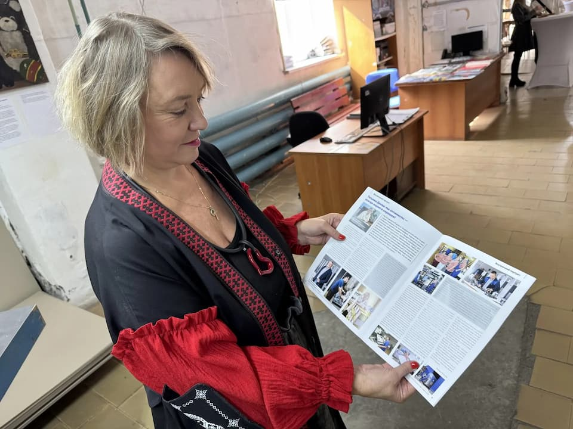

Типография «Лазурь» на страницах журнала «Печатный бизнес»

Мы рады поделиться отличной новостью! В авторитетном отраслевом издании «Печатный бизнес» вышло большое интервью с учредителем типографии «Лазурь» Татьяной Деевой.
В материале Татьяна рассказала о пути длиною в 29 лет, о любви к полиграфии и о том, как небольшое дело превратилось в мощное многопрофильное производство.
Ключевые моменты публикации:
Масштаб и команда: Сегодня «Лазурь» — это 110 профессионалов и производственные цеха площадью почти 10 000 м².
Многозадачность: Мы развиваем сразу несколько направлений — от ролевой и листовой печати до упаковки, флексы, книг и сувенирной продукции. Это позволяет нам гибко реагировать на рынок и всегда оставаться на плаву.
Стабильность и ценности: За почти три десятилетия работы на предприятии ни разу не задерживали зарплату. Мы ценим каждого сотрудника и внедряем современные технологии, не теряя человеческих качеств.
Взгляд в будущее: Мы — оптимисты! Несмотря на конкуренцию и вызовы времени, мы продолжаем переоснащать производство и осваивать новые форматы.
Интервью получилось искренним и вдохновляющим. Оно опубликовано на страницах 8–9.